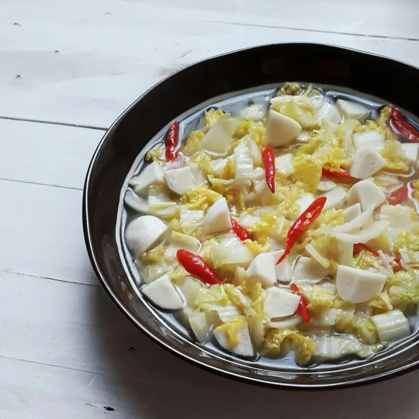

<< Nasi Goreng Recipe 3
Oseng Sawi Putih Jagung manis

Bahan
- 1 bonggol sawi putih (potong-potong)
- 1 jagung manis (serut)
- 3 siung bawang putih (cincang)
- Cabai sesuai selera
- Gula, garam, kaldu bubuk secukupnya
- Air secukupnya
- 1 bonggol sawi putih (potong-potong)
- 1 jagung manis (serut)
- 3 siung bawang putih (cincang)
- Cabai sesuai selera
- Gula, garam, kaldu bubuk secukupnya
- Air secukupnya
Cara membuat
- Tumis bawang putih hingga harum, masukkan cabai, jagung, dan sedikit air.
- Setelah jagung cukup empuk, masukkan sawi putih, bumbu, aduk rata.
- Masak hingga sawi layu, koreksi rasa, angkat, dan sajikan